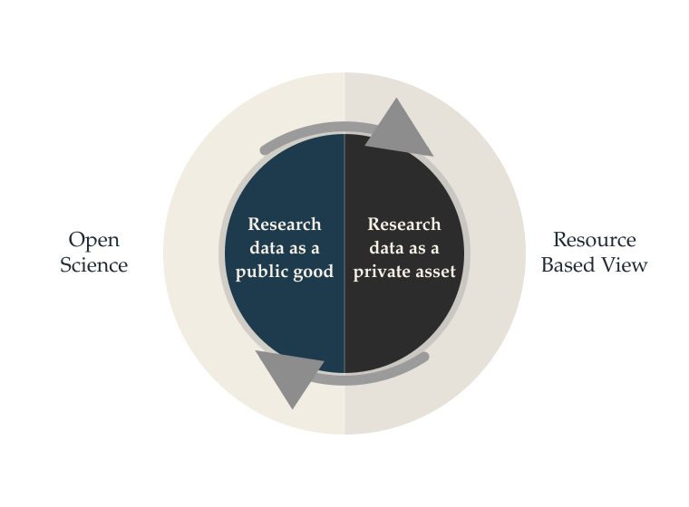

1Introduction
Similar to other research outputs, research data can have market and non-market values, but these values are frequently misaligned and often understood as in direct conflict with each other. Given the limited attention to this issue in existing literature, it is important to engage in purposeful discussions surrounding the governance of research data both/either as a public good and/or as a private asset. In this paper, we are concerned with this tension and with the challenges experienced by Research Performing Organizations (RPOs) in this regard. Our goal is to provide insights into what needs to be considered by RPOs in handling and overcoming this conflict.
The European Commission – one of the largest research funders in the world – acknowledges the need for a better interaction between the protection of research data for commercial exploitation (i.e., research data as a private asset), and its open dissemination to all levels of society (i.e., research data as a public good) (Directorate-General for Research and Innovation, 2022). Despite the existence of the overarching principle “as open as possible, as closed as necessary” for research data (Landi et al., 2020), there is little coverage of this topic in extant academic literature and not enough guidance available for RPOs. This article seeks, therefore, to address this gap in the theory and practice of research data governance.
Research data is understood in this article as new or existing data that has been created and/or processed to address questions of academic interest (Research Council of Norway, 2017). While any data can potentially be used for research purposes, this article focuses on data that has been collected or used expressly for this purpose. The distinction between data and research data is important because while substantial attention has been given to general data governance in the existing literature (e.g., Benfeldt Nielsen, 2017), fewer discussions have taken place regarding research data governance. Research data can include various kinds of data (e.g., industry, public and open data) and can present challenges that surpass those addressed by the data governance literature, as explained next.
Data governance can be described as an organization’s ability to strategically manage data assets through structured mechanisms that enhance the value of these assets (Abraham et al., 2019). Data governance is typically something that pertains to institutional data (e.g., data on customers, partners, suppliers, markets, employees, finance, and transactions) and is confined within organizational boundaries. Research data governance, on the other hand, typically takes place in a broader context through collaborative efforts across organizations. It involves various kinds of data that are generated with funding obtained from diverse sources, both public and private (Kouper et al., 2020), and the upholding of market and non-market values is important. We argue, therefore, that research data governance involves an inherent tension between the economic and societal values of data.
The main question of this article is then: How can research performing organizations balance the market and non-market values of the research data they hold? In addressing this question, we organize the article as follows. First, we discuss the values of research data as a public good and as a private asset. Next, we identify tensions between the market and non-market values of research data and propose the use of the Resource Based View (e.g., Barney, 1991) and Open Science (Vicente-Saez & Martinez-Fuentes, 2018) for confronting these tensions. Then, we apply our theoretical insights to research performing organizations in the institute sector and outline important points to be considered in achieving an integrated model for research data governance.
2The Value of Research Data
The academic research enterprise is fuelled by and advanced through data. Data allows researchers to test and validate their hypotheses and theories and to re-calibrate their theorizing. Data can also reveal patterns that lead to new research questions. Different kinds of data and combination of data from different sources can result in interdisciplinary insights, and new forms of data can broaden the scope of understanding a phenomenon. In short, data can be said to be the raw material of the academic research enterprise, working as an essential input in the production of academic knowledge.
The amount of data available to research is ever increasing, following estimates that indicate that the overall research output doubles every decade (Perrier et al., 2017). It is therefore a reasonable expectation that data-intensive and data-driven research will become the norm across fields. Automated systems that receive research data from various sources and provide automatic analysis are already a possibility. Take, for instance, the use of the capabilities of large generative models for data discovery and analysis (Majumder et al., 2024), which has the potential to automatically formulate hypotheses based on the data provided. It is likely that commercial and non-commercial actors – by making use of these technologies – will create products of interest for the research community and the public at large. This type of development further highlights the values of data in research and the need for RPOs to develop a governance model that accounts for the complexities, opportunities, risks, and values of research data.
Put simply, research data is of essential and increasing value in science as well as an asset in the market. Research data is sometimes referred to as this era’s oil and gold (Skogli et al., 2020). We argue that the time is ripe for RPOs to consider the market and societal values of their research data and to implement routines for data governing in accordance with these values. Navigating the tensions between research data as a public good and as a private asset can, however, be a challenge.
2.1Research Data as a Public Good
Research data can be, and often is, viewed as a public good. Research is often at least a partly publicly funded activity and the results are expected to be made publicly available and in the service of public interests.
A public good is non-excludable (meaning that no one can be excluded from using or benefiting from it), and non-rivalrous (meaning that its availability is not diminished by its use) (Ostrom & Ostrom, 2019; Samuelson, 1954). Examples of public goods are basic infrastructure such as sanitation, street lighting, and public education. Typically, governments are responsible for the provision of public goods, and they are funded by taxes. An important function of public goods is to correct for market failures. As an example, if education were to become a purely private good, many would lose access to schools due to a lack of affordability, and inequalities would likely grow due to reduced opportunities for social-economic mobility through education. Research data can be viewed as a public good when it is in part publicly funded and expected to be available to the public. Further, research data can be said to be a digital public good as most of the data produced today is in a digital format (Kleppner & Sharp, 2009).
Research data as a public good is an important part of the Open Science (OS) movement (Vicente-Saez & Martinez-Fuentes, 2018), which has the objective of providing free-of-charge and unrestricted access to publicly funded research. Open Science comprises several research outputs beyond data, such as open academic articles, open software, and open educational materials. The OS movement also has implications for the research process itself, shifting traditional closed practices toward open ones – for example, open peer review and citizen science. The implementation of OS has been gaining momentum through research funder mandates (e.g., Directorate-General for Research and Innovation, 2021). Several principles are highlighted in OS, among them transparency, equality of opportunity in accessing and taking part in science, integrity when carrying out science, inclusion of marginalized communities and geographical regions, and increased collaboration in addressing society’s complex problems, such as social inequality and environmental degradation (UNESCO, 2022). More recently, a focal point of the Open Science movement has been on how to make research data as open as possible (Landi et al., 2020). The “as open as possible” approach to research data recognizes the need to balance openness with other considerations, such as regulatory frameworks. One example is the General Data Protection Regulation (GDPR) wherein the privacy of individuals is heavily protected, and limitations are imposed on the processing of data containing information on individuals (e.g., Mondschein & Monda, 2019).
Many benefits are associated with research data as a public good. For one, the re-use potential of research data can be high. When properly managed, research data can be used for multiple purposes in different projects over time, especially when combined with other data. One could argue that re-using data is a sustainability issue because it may be unfeasible for the research enterprise to collect or generate new data every time a new research project is started. Following this line of argumentation, it is useful for research data to be put to new uses so that its value is extracted to the highest possible extent in service of advancing knowledge. Also, data re-use may help diminish undesirable consequences to the environment. One such undesirable consequence can be, for example, carbon intensive air travel by a research team for data collection purposes.
Other benefits of research data as a public good is that it can inform the design and evaluation of public policies (e.g., Crato & Paruolo, 2019), assist in the fight against pandemics and prevention of diseases (Nature, 2021), help in the monitoring, protection and restoration of the natural environment (Urbano et al., 2023), contribute to the development of high-quality educational resources (Coughlan, 2020), and in general help promote sustainable development (Pappas et al., 2018).
2.2Research Data as a Private Asset
At the same time, research data has a clear market value and can be viewed as a private asset because research data can be privately owned and used commercially. Research data is a versatile resource that can serve as an input upon which products or services are built, especially in light of emerging technologies that can automate the compilation and analysis of data.
Research data can be classified as an intangible asset, which is a non-physical resource that can generate earnings for an organization. Intangible assets can for instance consist of an organization’s brand, patents, intellectual capital, and customer relationships (Buonomo et al., 2020).
Research data as an asset can be understood within the Resource Based View (RBV). The RBV proposes that the bundle of resources and capabilities of an organization constitutes its source of competitive advantage, and when these resources and capabilities are valuable, rare, imperfectly imitable, and not substitutable, they can be the source of sustained competitive advantage (Barney, 1991; Barney et al., 2001; Wernerfelt, 1984). It can be difficult to estimate the value of research data as an asset, as well as its role in providing organizations with sustained competitive advantage. This is partly because research data can vary in value throughout its lifecycle. For instance, raw data can have a wide range of applicability, but likely a lower value due to the need for clarifying its use cases. Processed and curated data can have a narrow range of applicability, but likely a higher value due to already identified use cases. We argue that not only economic benefits can be expected from the use of research data as a private asset but also gains in competitiveness.
Beyond arguments on economic returns and competitive advantage, one could argue that research data ought to be governed as a private asset because of the need to cover the costs involved in generating and maintaining high-quality research data, and because of the under-funding of this activity. Research data generation and upkeep can involve many hours of labour and sometimes also the use of expensive equipment. Activities related to research data management and stewardship are typically under-funded (Mons, 2020). This is often the case in the planning and execution of research projects, where the funding is not unlimited and typically must be prioritized for activities other than data management (such as the production of academic publications or the deployment of a communication strategy for the project). Therefore, the argument continues, RPOs may need to consider commercialization prospects for their research data if they intend to govern data in a financially sustainable way.
Additionally, there is a cost in making research data FAIR. The acronym FAIR stands for Findable, Accessible, Interoperable and Reusable, and managing data according to the FAIR principles means handling and documenting data in a way that makes it understandable and reusable (Wilkinson et al., 2016). Before becoming FAIR, research data needs to be enriched with contextual information that allows others to find and understand it, as well as being supported by technical infrastructures and policies that allow the exchange of data within and across RPOs and other organizations. All of this means that there is a cost for RPOs to “FAIRify” data.
Another cost is connected to the evaluation of the re-usability potential of research data. The value of data beyond its first use in a research project needs to be discussed and assessed. Research data can be of a highly contextualized nature where their generation and processing happen with very specific applications in mind. This contextualized data allows researchers to draw insights that are highly relevant to the research questions being explored in a project, but, at the same time, this may reduce the transferability of the data to other contexts and applications. For example, interview data is typically highly contextual and difficult to transfer to other contexts. While preserving this type of data for reproduction purposes is important, its re-application to other contexts and potential commercial applications is uncertain. Not to mention that regulations, such as GDPR, can substantially limit the reusability of this type of data. All of this means that an effort has to be made by RPOs in evaluating the re-usability potential of their research data. This represents another cost for RPOs, as substantial work may be required to make these evaluations and to select which data is worth preserving and for what ends.
Considering the use of research data for commercial ends may be interpreted as taking precedent over open research data even in publicly funded projects. For instance, the European Commission states that beneficiaries are required to adequately protect their results and consider possible prospects for their commercial exploitation (Directorate-General for Research and Innovation, 2022). The Horizon Europe program states that beneficiaries need to make it viable for research results to be commercially exploited through, for instance, the transfer and licensing of results (European Commission, 2022). These statements highlight the commercial value of research outputs including research data.
It is important to note that these discussions go beyond the research data that underpins claims in scientific publications. Once research results are disseminated, the accompanying data typically needs to be made available for verification purposes (except when there are legitimate reasons for not doing so). This is not only a compliance issue, but also a best practice in research. Our discussion concerns the overall research data generated by individual projects and the body of data accumulated from projects over time.
Currently, the costs for generating, managing, and preserving research data are high and rarely sufficiently accounted for. This can result in inefficiencies, unfulfilled potential, unsustainable financial practices, and missed opportunities. We also suggest that the protection of research data for commercial exploitation may take precedent over its open dissemination. Consequently, within the view of research data as an asset, the strategic management of research data by RPOs – in a similar way to how they manage other intangible assets – can prove to be very important. This is particularly important under increasingly competitive conditions for obtaining research funding (e.g., Slaughter & Rhoades, 2009).
3Tension Between the Market and Non-market Values of Research Data
The discussion on research data as a public good or as a private asset can be contentious. Many hold the view that publicly funded research data should be open to all and benefit all. At the same time, others argue that there are different ways through which research data can benefit society, and that can include commercial routes.
The issue of how research data ought to be treated and how it can lead to societal benefits can be divided into two camps. One camp argues that research data benefits society through its open availability and removal of any constraints on its use (i.e., research data as a public good). In this view, the non-market value of research data is highlighted. Open access to research data ought to be maximized, and commercial considerations are neither viewed as important nor as part of the ideals of science. In short, research data ought to be open, transparent, accessible and inclusive.
The other camp argues that research data benefits society through the recognition of its market value and the consideration of possible prospects to commercially exploit this valuable resource (i.e., research data as a private asset). In this view, the market value of research data is highlighted. Research data ought to be managed as an intangible asset and through strategies that recognize the potential of research data as a building block in the construction of commercial products and/or services. In short, research data ought to be strategically managed as an asset.
This tension – although recognized by the European Commission itself – is currently underexplored in theory and in practice. This leads to the interesting question of whether it is possible to align the protection of research data as a private asset, subject to commercial exploitation, with the open, broad and fast dissemination of research data as a public good. This is relevant for any research project generating data, as well as for RPOs who need to govern their research data across projects over time.
It is relevant to undertake this discussion about research data specifically and not about research outputs in general, because research data is a kind of output that has a long lifecycle potentially spanning over several research projects. Also, research data can have different levels of processing, from raw to highly processed data. Research data can also be combined with, and enriched by other data and as such, it can be packaged and re-packaged over time. The potential for transferability and reusability can therefore be high for research data, making it different from other research outputs.
We argue that, currently, the inherent tension between the views of research data as a public good and as a private asset is not sufficiently addressed. Researchers managing data in projects may find it difficult to deal with these opposing views, but more importantly, RPOs may have difficulties in dealing with this tension when governing research data across projects over time. How, then, can RPOs integrate these two views?
4Confronting the Tension
In addressing the question of how RPOs can integrate the views of research data as a public good and as a private asset, we suggest that it is important for RPOs to align their research data governance model with the overall strategy of the organization. It would be productive to involve representatives from as many groups in the organization as possible in this undertaking, to account for different perspectives. The groups include, but are not limited to, Technology Transfer Offices (TTOs), research support units, legal advisors, scientists, and the organization’s leadership.
It is also worth noting that national and international strategies play a role in the data governance model of RPOs. For instance, at the national level, governments typically expect RPOs to be increasingly self-sufficient and to produce research of high relevance and benefit for society, increasingly so via market mechanisms (Broucker & De Wit, 2015). The use of market logics in the research system is related to new public management, which refers to the introduction of managerial principles, measures of performance, competition, and a pursuit of efficiency in public institutions and in activities that are at least partly publicly funded (Broucker & De Wit, 2015). At the European level, the Commission guides beneficiaries to protect their research results and to consider ways to have them commercially exploited before they are disseminated. Further, the EU has an ambition to create a common data market (Ryan et al., 2024), which can help shape the data governance model of RPOs through the introduction of rules and expectations for participating organizations. All of this means that RPOs have been encouraged to protect their research results, seek operational efficiency, and explore new revenue streams beyond their public funding, which includes the consideration of a dual approach for governing their research data (i.e., as a private asset and as a public good). In sum, while national and international strategies set directions for RPOs in many respects, research organizations still have to translate these strategies to their specific contexts and to develop a data governance model that is suited to the challenges and opportunities associated with the types of data at their disposal.
4.1As open as Possible, as Closed as Necessary
We believe most RPOs rely on the overarching principle “as open as possible, as closed as necessary” to navigate the tension between the market and non-market values of the research data they hold. However, we argue that this principle does not provide sufficient guidance for RPOs. Neither does it converge with the growing expectation that research results ought to benefit society via market mechanisms, nor does it fit perfectly with the requirements from the European Commission regarding the need to protect research results. More guidance is needed for RPOs to move closer to an integrated strategy to research data governance.
Although the principle “as open as possible, as closed as necessary” provides an overall orientation for RPOs – that is, it prescribes a primary course of action “share research data as open as possible” followed by the complementary action of “protect research data as necessary” – it does not give RPOs concrete advice on how to achieve a balance between open and closed data. Other related initiatives, such as the DORA declaration,1 also do not provide sufficient guidance for RPOs in this respect. The DORA declaration aims to recognize a wider range of research outputs beyond scientific publications. This includes, for instance, the production of datasets and software. However, despite being an important driver of new research evaluation practices, the declaration does not guide RPOs in how to strike a balance between the open dissemination and the protection of research data.
4.2Resource Based View and Open Science
Therefore, more guidance is needed in this respect. With this purpose in mind, we suggest that the adoption of the Resource Based View and Open Science can provide insights for the development of a data governance model that acknowledges research data as a public good and as a private asset. We argue that RBV and OS can be seen in connection with Scheiner’s (2020) framework, which deals with opposing perspectives that carry an inherent tension between them. Scheiner proposes four approaches in this regard: (1) to treat the perspectives as lacking a common ground and contradictory, where one perspective is chosen over the other (either-or); (2) to treat the perspectives as in constant tension, preserving the paradoxes between them (back-and-forth); (3) to treat the perspectives as independent and yet complementary, placing them in dialog with each other (both-and); and (4) to treat the perspectives as blending into each other, merging them into a synthesis (more-than).
Each of Scheiner’s four approaches has merit and can help solving different types of conflict. For our purposes, we believe Scheiner’s third approach (i.e., both-and) would suit RPOs best as this approach emphasizes complementarities between research data as a public good (as part of Open Science) and as a private asset (as part of the Resource Based View). We argue that the remaining alternatives would not suit RPOs as well for the following reasons:
either-or: by following this approach, RPOs would not try to implement an integrated data governance model. Rather, they would choose either to govern their research data as a public good or as an asset. We believe this is not a productive approach because RPOs are increasingly using data from both private and public sources that need to be managed accordingly, as well as producing commercially valuable data themselves. Further, RPOs are being increasingly incentivized by funders to extract value from their research data, both for commercial and societal ends.
back-and-forth: we believe this approach would generate confusion as it does not set a clear direction for how RPOs wish to draw value from their research data. Rather, it gives room for projects within RPOs to choose freely given the particularities of the situation. This would require a high level of understanding of these issues by researchers, who typically do not have the time to engage in tasks that are outside of their core activities (i.e., research). This approach may also pose challenges for RPOs when they need to present themselves to stakeholders and the public as it may look like they lack established organizational processes and routines for research data management.
more-than: although this is an interesting approach with potential to be developed and implemented by RPOs in the future, we believe that it is currently premature for RPOs to develop a highly integrated governance model that identifies and tackles all possible conflicts in managing research data as a public good and as a private asset without any friction.
Therefore, we believe that Scheiner’s third approach (i.e., both-and) suits RPOs best. This approach represents a step forward for how RPOs can find ways to deal with the market and non-markets values of research data, in a complementary fashion. We illustrate this approach in Figure 1, and then we explore the interplay between RBV and OS in more detail.

4.3How can the Resource Based View inform Open Science?
A foundational element of the Resource Based View is the strategic management of organizational assets (Wernerfelt, 1984), which includes research data. RPOs can strategically manage their research data assets, exchange them internally and externally, and establish collaborations based on these assets in mutually benefiting ways. Governing research data strategically contributes to more sharing and re-use of data internally and across organizations, benefiting and promoting Open Science.
Strategically managing research data involves taking steps to ensure that this activity is funded in a sustainable way, as this can enhance the long-term preservation and availability of data. This is beneficial for Open Science as more research data is likely to be findable, accessible, interoperable, and re-usable (FAIR) when sufficient resources are directed to this activity. RPOs can, for instance, seek revenue streams from selected data assets via direct selling or licensing, and such revenue streams can be used to support FAIR data management. Our main argument, in this regard, is that the commercialization of research data can be used to sustainably finance FAIR data management at research performing organizations, thus contributing to Open Science.
Another important aspect of the Resource Based View concerns resource allocation (Peteraf, 2005). It is often the case that resources are limited and need to be prioritized. RPOs need to allocate resources efficiently, not least in regard to research data management. Treating research data as an asset can help RPOs make decisions regarding resource allocation. For instance, RPOs may choose to prioritize the preservation of higher-value data assets, followed by lower-value ones. Note that research data can be valuable for both market and non-market applications and that it is important for RPOs to assess their data in light of both purposes. In short, we argue that RPOs can benefit from assessing the market and non-market values of their data assets and from using this assessment to make resource-allocation decisions. This is beneficial for Open Science because higher-value research data assets are more likely to be re-used than lower-value ones.
Lastly, following the argument that strategic partnerships can be the source of competitive advantages (Dyer & Singh, 1998), we suggest that RPOs can benefit from forming partnerships with organizations holding complementary data assets. This way, RPOs can achieve mutually beneficial exchanges and jointly held competitive advantages. This is beneficial for Open Science as RPOs can learn about collaboration opportunities based on research data and share resources and capabilities across organizations, thus avoiding the duplication of efforts and enhancing overall efficiency. All of which are key goals of Open Science.
4.4How can Open Science inform the Resource Based View?
Open Science promotes the sharing of research data and related materials, such as methodologies and data management plans (Staunton et al., 2021). The increased availability of these outputs can help RPOs access resources that are not held by any individual organization in isolation. RPOs can then create their own mix of internally and externally held research data, which can provide them with unique combinations of resources and competitive advantages. Open Science – via the increased sharing of research data – can then inform the Resource Based View by making available a larger resource pool to RPOs.
As Open Science promotes the wide distribution of knowledge, it creates appropriate conditions for organizational learning and innovation (Directorate-General for Research and Innovation, 2016). RPOs can stay up to date with the latest scientific and technological advancements and achieve competitive advantages based on where they direct their learning efforts, rather than on information withholding. Open Science can contribute to more efficient resource use and innovation, as RPOs have more knowledge at their disposal and a reduced need to duplicate their efforts in searching for scientific and technological breakthroughs.
Open Science enhances responsible research practices, such as transparency and integrity, and increased collaboration in addressing societal problems (UNESCO, 2022). This can inform the Resource Based View as the possession of ethical values and practices is, by itself, an organizational resource. This resource contributes to RPO’s ethical behaviours, which, in turn, can attract talent, customers, and collaborators who value transparency and fairness.
Next, we conceptually apply these discussions to RPOs in the institute sector as an illustrative example in order to gain insights into how these RPOs can move toward an integrated strategy to research data governance.
5Research Performing Organizations in the Institute Sector
RPOs have not only organizational data that they use to guide their operations – such as data on employees, customers, and business transactions – but they also have research data as the basis for (academic) publications and also as the basis for products and/or services. Naturally, we are here concerned with the latter type of data (i.e., research data).
On the spectrum of how business-oriented they are, RPOs in the institute sector typically have a strong social mission to generate value to society through applied research. These organizations frequently operate as a foundation without the presence of shareholders seeking financial returns on their investments. Rather, their operation relies on generating value of a broad nature and to a wide range of stakeholders, and their financial return is typically re-invested back in the organization, with the goal to renew infrastructures and improve operations.
We argue that RPOs in this sector are embedded in non-market (social, not-for-profit) and market (commercial, for-profit) dynamics. The EU Directive 2019/1024 of the European Parliament2 regarding public data – which attempts to balance the protection of datasets with high value with the open availability of data – is particularly applicable to RPOs in the institute sector as they need to generate revenues beyond their public funding. These RPOs are concerned with advancing the knowledge frontier of the academic fields they are operating in, and, at the same time, with the application of the produced knowledge in the marketplace. This dual orientation poses interesting challenges to research data governance. For instance, RPOs in the sector need to comply with mandates on open research data and, at the same time, protect commercially sensitive research data. Also, they need to contribute to the openness and transparency of science through open research data and, at the same time, strategically manage research data and explore the possibility of having innovative products and/or services built based on data. Further, they need to sort out if their contribution to societal objectives, such as the Sustainable Development Goals, is best achieved through governing research data as a public good or as a private asset or a combination of both.
We acknowledge that these challenges are not exhaustive and may not be representative of all RPOs in the sector. What we draw attention to here is that RPOs in the sector typically operate under market and non-market dynamics, and that there is limited guidance on how such organizations can govern their research data. Such a discussion can benefit both the theory and practice of research data governance.
We believe it is important to discern between research data governance at the organizational level, and research data management at the project level. The first level refers to how RPOs decide to govern the research data produced across projects over time. The second level refers to how projects undertaken by researchers at RPOs decide to manage the research data generated in the project. Consequently, we outline important points to be considered, at the organizational and project levels, in a research data governance model that balances the economic and societal values of research data, in a way that these two perspectives are seen as complementary rather than in competition with each other (Table 1).
| At the organizational level | At the project level |
|---|---|
| Develop and implement a research data governance policy recognizing research data as a public good and as a private asset | Use a data management plan (DMP) to assess the market and non-market values of research data. |
| Evaluate which infrastructures are necessary to implement the research data governance policy. | Strategically negotiate terms for research data ownership at project start. |
| Assist researchers in the implementation of the policy in research projects. | Make a realistic budget for research data management. |
| Consider forming data partnerships both for commercial and non-commercial purposes. Assess which data assets can provide unique and sustained competitive advantages. Implement a data catalogue to improve findability and re-use |
Follow up on plans to protect research data with market value and, otherwise, to disseminate research data as openly as possible. Take Intellectual Property (IP) into account when managing research data. |
5.1Organizational Level
5.1.1Research Data Governance Policy
At the organizational level, we suggest that RPOs develop and implement a policy that integrates the views of research data as a public good and as a private asset, evaluate which infrastructures are necessary to implement the policy, assist researchers in implementing the policy in research projects, consider data partnerships both for commercial and non-commercial purposes, assess the unique and sustained competitive advantages of their data assets, and implement a data catalogue to improve findability and re-use.
A research data governance policy is a document that establishes guidelines for how research data ought to be managed, defines roles and responsibilities for tasks associated with data management, and sets a baseline for data quality and for how the organization wishes to draw value from data (Abraham et al., 2019). We suggest that RPOs develop a policy that recognizes the values of research data as a public good and as a private asset as one of the first steps toward an integrated strategy. Although the policy may not result in immediate clarity or action, it sets a frame and a starting point for how a balance between the market and non-market values of research data can be reached. We also suggest that such a policy should be developed in consultation with any interested parties in the organization, and that it should be updated frequently to reflect developments in this area. As previously mentioned, it is also important to align such a policy with the overall strategy of the organization, and, when applicable, with national and international strategies.
5.1.2Necessary Infrastructures
Infrastructures can be understood as the foundations of an organization, encompassing technical systems and organizational arrangements, which support the core activities of the organization (Leodolter, 2017). In this regard, RPOs can map out their needs and assess whether existing (internal and/or external) infrastructures meet their needs. If not, RPOs may need to explore new infrastructures that suit their needs. At least two approaches are available in this regard. One approach is to adopt existing infrastructures. The advantages of which include lower costs and faster implementation, and a disadvantage is the risk of a poor fit between what is needed by the RPO and what is possible via the infrastructure. Another approach is to explore new infrastructures. An advantage of which is that the solution can be tailored to the organization, and a disadvantage is that it typically costs more and takes more time to implement. Despite the chosen approach, it is important that the infrastructure allows for the realization of both the market and non-market values of research data.
5.1.3Implementation of Policy
RPOs also need to assist researchers in the implementation of the research data governance policy. While researchers are the ones with intimate knowledge of their data and of the possibilities and limitations in this regard, they may not have the time to engage in related administrative tasks, such as enriching data with contextual information and selecting an appropriate license for the data. When it comes to identifying and capturing the market and non-market values of research data, dedicated support personnel can assist with safeguarding data when necessary and disseminating it when possible. This is a complex support function because it requires specialized knowledge from various domains (such as science commercialization and open science), which are often outside of researchers’ core activities. Therefore, RPOs can benefit from building a support function that can help researchers achieve the societal and economic values of research data.
5.1.4Data Partnerships
Data partnerships are collaborations among organizations focused on facilitating access to the data they hold in combination, where the partnership can have commercial and/or non-commercial purposes (Rasche et al., 2021). Engaging in such partnerships can be a productive way to disseminate research data within a constellation of RPOs and to collaboratively work on the shared data to produce academic publications and, at the same time, to consider commercialization prospects based on the data. Also, the protection of research data by the partnership allows for the establishment of fair-use conditions in case outside actors are interested in using the data. For instance, if non-commercial actors (such as universities or other RPOs) wish to use the data for research purposes, the partnership could provide the data at the cost of making it available. Contrastingly, if commercial actors wish to use the data for for-profit endeavours, the partnership could seek a fair compensation for making the data available. Such partnerships could also jointly develop and make use of technical and non-technical infrastructures and, by doing so, achieve more efficiency in resource use.
5.1.5Competitive Advantages
It is important for RPOs to assess which data assets can provide unique and sustained competitive advantages. We believe this requires, for instance, good domain knowledge, a good overview of the organization, and an understanding of IPR (Intellectual Property Rights). Building competitive advantages based on research data assets is likely something that takes time and that requires strategic investment. Important prerequisites are that research data is well documented and FAIR, and that a support team with experts in the aforementioned areas (domain knowledge, overview of the organization and IPR) is in place and ready to identify and govern valuable data assets.
5.1.6Data Catalogue
A data catalogue is an essential tool for RPOs looking to implement data governance strategies. It enables the retrieval and re-use of datasets, which facilitates collaboration within and across domains. A data catalogue helps ensure that data is properly classified, described and documented to meet legal, ethical, and funding agency requirements. We recommend that registering research data in the data catalogue should be a mandatory practice, even when the research data itself is stored elsewhere. Long-term records of data ensure that it remains accessible and usable even after a research project has ended.
Data curation is another activity necessary to exploit the full potential of collected data and the data catalogue, and long-term data curation should ideally be elevated from the project level to the organizational level. RPOs may choose to have domain-specific data curators or, alternatively, generic data curation services.
5.2Project Level
5.2.1Data Management Plans
At the project level, we suggest the use of a Data Management Plan (DMP) to assess the market and non-market values of research data, the negotiation of terms for data ownership at project start, the development of a realistic budget for data management, the follow-up on plans to protect research data with market value and, otherwise, to disseminate research data as openly as possible, and to take Intellectual Property (IP) into account when managing research data. It is worth noting that national and international strategies can influence the practices for data management in research projects, not least through requirements imposed by research funders. For example, funders often require beneficiaries to manage research data responsibly and to follow best practices for data management. However, projects still need to take steps to translate these requirements into action.
A DMP is a document that outlines how research data will be handled in a project, from the start until after the end of the project; such a plan covers all the steps of the research data lifecycle – from data generation, through data processing, documentation, and analysis, to data preservation (Michener, 2015). A DMP encompasses all critical aspects related to research data management. Currently, DMPs are an under-utilized tool for assessing the economic and societal values of research data, but they may be very useful in this regard. Existing frameworks, such as the Data Canvas (Stiglich et al., 2023), can be integrated in a DMP and used to guide researchers through a series of questions pertaining the potential uses for the data, for whom the data generates value for, and at what cost.
DMPs have their limitations, however. Even when DMPs are mandatory, not all projects will create a data management plan, and even fewer will revise and update it as advised. Early DMPs will often not encompass all aspects of the data to be produced in research projects, and thus, conclusions about the value of the data will be premature. DMPs are in most cases project specific, even though umbrella DMPs do exist. This means the value will be assessed by the project manager, and the benefits for the organization as a whole are less likely to be considered. Nevertheless, despite limitations, DMPs are still a valuable tool for research projects.
5.2.2Data Ownership
We suggest that issues related to research data ownership should be discussed and agreed upon at project start. This should be a part of the DMP, and it should also be included and regulated in contracts with project partners and research funders. When the project has already identified the economic and societal values of research data, decisions regarding data ownership become easier because such evaluations can guide which data ought to be protected, by whom, and for what ends.
5.2.3Budget for Data Management
Just as important is the development of a budget for research data management. As mentioned before, this is typically an under-funded activity, and it is important for a project consortium to find financially sustainable solutions to manage their data. In this respect, RPOs could consider supplementing projects with funding dedicated to research data management. One source for this funding could be the commercialization of products and/or services based on the research data generated across projects over time.
5.2.4Adhere to and Update Plans
Also, it is imperative that projects follow through on their plans to protect research data with market value and, otherwise, to disseminate research data as openly as possible. This can be a challenge for project consortiums because once a project reaches its end, there is typically no funding left to sustain the preservation of data for the long term. In this respect, RPOs also play an important role as they can provide the infrastructures necessary to preserve research data over time. Realizing the economic and societal values of research data is, therefore, an endeavour that involves both the careful handling of data on a project basis, as well as the strategic governance of data by RPOs.
5.2.5Intellectual Property
Lastly, it is important for projects to evaluate whether and which parts of the data material are/can be protected, and how (Carroll, 2015; European Union, n.d.). Usually, copyright over research data applies when there is a creative component involved in organizing the data. Otherwise, data is considered facts and cannot be protected by copyright. Other forms of legal protection may be available for research data, such as the database protection in the EU, which gives the creators of resource-intensive databases the right to deny access to the database and to seek economic compensation for the re-use of the data. Another way to regulate the re-use of research data is through licensing. Creative Commons (CC) licenses have become very common for sharing open data in the last years. CC licenses allow creators to easily share their data in standard ways. In short, it is increasingly important for projects to consider which IP rights may be applicable to their research data, and to manage such rights in accordance with the economic and societal values of their data.
6Conclusion
In addressing the question of how research performing organizations can balance the market and non-market values of the research data they hold, this article has proposed the adoption of insights from the Resource Based View and Open Science in a complementary fashion, and it has also proposed the adoption of practices – beyond the overarching principle “as open as possible, as closed as necessary” – that can help RPOs move toward an integrated strategy for research data governance. At the organizational level, we suggest that RPOs should develop a policy that integrates the views of research data as a public good and as a private asset, evaluate which infrastructures are necessary to implement the policy, assist researchers in the implementation of the policy in research projects, consider forming data partnerships both for commercial and non-commercial purposes, assess which data assets provide unique and sustained competitive advantages, and establish a data catalogue for findability purposes. At the project level, we suggest the use of a DMP to assess the market and non-market values of research data, the negotiation of terms for research data ownership at project start, the development of a realistic budget for research data management including data curation, the follow-up on plans to protect research data with market value and, otherwise, to disseminate research data as openly as possible, and to take Intellectual Property (IP) into account when managing research data.
We have not fully acknowledged that RPOs in the institute sector are heterogeneous in nature. They differ, for instance, in size, specialization focus, and funding model. Some institutes are smaller in size and are specialized in one or a few related research areas, whereas others are bigger and operate in a broad range of areas. Some institutes may be fully publicly financed, whereas others have a variety of income sources. Therefore, the discussions and insights may not apply to all RPOs in the sector. Further, we have not included discussions on how (open) research data can be economically valuated (Tu & Shen, 2024). This is an important aspect to be considered by RPOs wishing to govern their research data both as a private asset and as a public good. Among potential topics that could be addressed in future research, empirical studies could use the insights from this conceptual paper to examine and expand on the challenges faced by RPOs when governing research data, and to investigate the effectiveness of the suggested practices (at the organizational and project levels) in moving RPOs closer to an integrated strategy to research data governance. Future research could also discuss alternatives for the economic valuation of (open) research data by RPOs.
In conclusion, this article brings to light some of the tensions between the market and non-market values of research data and proposes points to be considered by RPOs wishing to develop a strategy for research data governance that integrates the views of data as a public good and as a private asset. It is our hope that our article will provide relevant insights for the practice of research data governance and that future research will pursue this line of inquiry further, through theoretical developments and empirical studies.
Acknowledgments
The authors would like to acknowledge Huan V. D. Than and Odracir Antunes Jr. for their helpful and constructive feedback in previous versions of the manuscript.
Data Statement
This work did not include research data.
Funding Sources
This research did not receive any specific grant from funding agencies in the public, commercial, or not-for-profit sectors.
Declaration of Interest
The authors declare that the research was conducted in the absence of any relationships that could be construed as a potential conflict of interest.
Use of AI Tools
During the preparation of this work the authors used Scopus AI and Microsoft Copilot to search for existing literature on the topic of interest for the article, in addition to traditional ways to search for literature (via database searches and via the reference list of relevant articles). The use of these AI tools did not have an impact on the writing of the manuscript.
Notes
DORA declaration: https://sfdora.org/.↩︎
Directive (EU) 2019/1024: http://data.europa.eu/eli/dir/2019/1024/oj/eng.↩︎
References
- Abraham, R., Schneider, J., & vom Brocke, J. (2019). Data governance: A conceptual framework, structured review, and research agenda. International Journal of Information Management, 49, 424–438. https://doi.org/10.1016/j.ijinfomgt.2019.07.008
- Barney, J. (1991). Firm resources and sustained competitive advantage. Journal of Management, 17(1), 99–120. https://doi.org/10.1177/014920639101700108
- Barney, J., Wright, M., & Ketchen, D. J. (2001). The resource-based view of the firm: Ten years after 1991. Journal of Management, 27(6), 625–641. https://doi.org/10.1016/S0149-2063(01)00114-3
- Benfeldt Nielsen, O. (2017). A comprehensive review of data governance literature. Selected Papers of the IRIS8, 120–133. https://aisel.aisnet.org/iris2017/3
- Buonomo, I., Benevene, P., Barbieri, B., & Cortini, M. (2020). Intangible assets and performance in nonprofit organizations: A systematic literature review. Frontiers in Psychology, 11. https://doi.org/10.3389/fpsyg.2020.00729
- Broucker, B., & De Wit, K. (2015). New public management in higher education. In J. Huisman, H. de Boer, D. D. Dill, & M. Souto-Otero (Eds.), The Palgrave International Handbook of higher education policy and governance (pp. 57–75). Palgrave Macmillan. https://doi.org/10.1007/978-1-137-45617-5_4
- Carroll, M. W. (2015). Sharing research data and intellectual property law: A primer. PLoS Biology, 13(8), Article e1002235. https://doi.org/10.1371/journal.pbio.1002235
- Coughlan, T. (2020). The use of open data as a material for learning. Educational Technology Research and Development, 68(1), 383–411. https://doi.org/10.1007/s11423-019-09706-y
- Crato, N., & Paruolo, P. (Eds.). (2019). Data-driven policy impact evaluation: How access to microdata is transforming policy design. Springer International Publishing. https://doi.org/10.1007/978-3-319-78461-8
- Directorate-General for Research and Innovation. (2016). Open innovation, open science, open to the world: A vision for Europe. Publications Office of the European Union. https://data.europa.eu/doi/10.2777/061652
- Directorate-General for Research and Innovation. (2021). Horizon Europe, open science: Early knowledge and data sharing, and open collaboration. Publications Office of the European Union. https://data.europa.eu/doi/10.2777/18252
- Directorate-General for Research and Innovation. (2022). Open science and intellectual property rights: How can they better interact? Publications Office of the European Union. https://data.europa.eu/doi/10.2777/347305
- Dyer, J. H., & Singh, H. (1998). The relational view: Cooperative strategy and sources of interorganizational competitive advantage. The Academy of Management Review, 23(4), 660–679. https://doi.org/10.2307/259056
- European Commission. (2022). Your guide to intellectual property management in Horizon Europe. Publications Office of the European Union. https://data.europa.eu/doi/10.2826/409260
- European Union. (n.d.). Database protection. Directorate General for Internal Market, Industry, Entrepreneurship and SMEs. Retrieved June 16, 2025, from https://europa.eu/youreurope/business/running-business/intellectual-property/database-protection/index_en.htm
- Kleppner, D., & Sharp, P. A. (2009). Research data in the digital age. Science, 325(5939), 368–368. https://doi.org/10.1126/science.1178927
- Kouper, I., Raymond, A. H., & Giroux, S. (2020). An exploratory study of research data Governance in the U.S. Open Information Science, 4(1), 122–142. https://doi.org/10.1515/opis-2020-0010
- Landi, A., Thompson, M., Giannuzzi, V., Bonifazi, F., Labastida, I., da Silva Santos, L. O. B., & Roos, M. (2020). The “A” of FAIR – As open as possible, as closed as necessary. Data Intelligence, 2(1–2), 47–55. https://doi.org/10.1162/dint_a_00027
- Leodolter, W. (2017). Elements of an organization’s infrastructure—Relevant existing and expectable technologies. In W. Leodolter (Ed.), Digital transformation shaping the subconscious minds of organizations: Innovative organizations and hybrid intelligences (pp. 25–66). Springer International Publishing. https://doi.org/10.1007/978-3-319-53618-7_3
- Majumder, B. P., Surana, H., Agarwal, D., Hazra, S., Sabharwal, A., & Clark, P. (2024). Data-driven Discovery with Large Generative Models. arXiv. https://doi.org/10.48550/arXiv.2402.13610
- Michener, W. K. (2015). Ten simple rules for creating a good data management plan. PLoS Computational Biology, 11(10), Article e1004525. https://doi.org/10.1371/journal.pcbi.1004525
- Mondschein, C. F., & Monda, C. (2019). The EU’s general data protection regulation (GDPR) in a research context. In P. Kubben, M. Dumontier, & A. Dekker (Eds.), Fundamentals of clinical data science (pp. 55–71). Springer International Publishing. https://doi.org/10.1007/978-3-319-99713-1_5
- Mons, B. (2020). Invest 5% of research funds in ensuring data are reusable. Nature, 578(7796), 491–491. https://doi.org/10.1038/d41586-020-00505-7
- Nature. (2021). How epidemiology has shaped the COVID pandemic. Nature, 589(7843), 491–492. https://doi.org/10.1038/d41586-021-00183-z
- Ostrom, V., & Ostrom, E. (2019). Public goods and public choices. In E. S. Savas (Ed.) Alternatives for delivering public services (pp. 7–49). Routledge. https://doi.org/10.4324/9780429047978-2
- Pappas, I. O., Mikalef, P., Giannakos, M. N., Krogstie, J., & Lekakos, G. (2018). Big data and business analytics ecosystems: Paving the way towards digital transformation and sustainable societies. Information Systems and E-Business Management, 16(3), 479–491. https://doi.org/10.1007/s10257-018-0377-z
- Perrier, L., Blondal, E., Ayala, A. P., Dearborn, D., Kenny, T., Lightfoot, D., Reka, R., Thuna, M., Trimble, L., & MacDonald, H. (2017). Research data management in academic institutions: A scoping review. PLoS One, 12(5), Article e0178261. https://doi.org/10.1371/journal.pone.0178261
- Peteraf, M. A. (2005). Research complementarities: A resource-based view of the resource allocation process model (and Vice Versa). In J. L. Gilbert & G. Bower Clark (Eds.), From resource allocation to strategy. Oxford University Press. https://doi.org/10.1093/oso/9780199277445.003.0018
- Rasche, A., Morsing, M., & Wetter, E. (2021). Assessing the legitimacy of “Open” and “Closed” data partnerships for sustainable development. Business & Society, 60(3), 547–581. https://doi.org/10.1177/0007650319825876
- Research Council of Norway. (2017). The research council of Norway’s policy for open access to research data. https://www.forskningsradet.no/contentassets/e4cd6d2c23cf49d4989bb10c5eea087a/the-research-council-of-norways-policy-for-open-access-to-research-data.pdf
- Ryan, M., Gürtler, P., & Bogucki, A. (2024). Will the real data sovereign please stand up? An EU policy response to sovereignty in data spaces. International Journal of Law and Information Technology, 32(1), eaae006. https://doi.org/10.1093/ijlit/eaae006
- Samuelson, P. A. (1954). The pure theory of public expenditure. The Review of Economics and Statistics, 36(4), 387–389. https://doi.org/10.2307/1925895
- Scheiner, T. (2020). Dealing with opposing theoretical perspectives: Knowledge in structures or knowledge in pieces? Educational Studies in Mathematics, 104(1), 127–145. https://doi.org/10.1007/s10649-020-09950-7
- Skogli, E., Stokke, O. M., Hveem, E. B., Aamo, A. W., Scheffer, M., & Jakobsen, E. W. (2020). Er data «den nye oljen» for Norge?. Menon Economics. https://www.menon.no/data-nye-oljen-norge/
- Slaughter, S., & Rhoades, G. (2009). Academic capitalism and the new economy. Johns Hopkins University Press. https://doi.org/10.56021/9780801879494
- Staunton, C., Barragán, C. A., Canali, S., Ho, C., Leonelli, S., Mayernik, M., Prainsack, B., & Wonkham, A. (2021). Open science, data sharing and solidarity: Who benefits? History and Philosophy of the Life Sciences, 43(4), 115. https://doi.org/10.1007/s40656-021-00468-6
- Stiglich, L., Sharp, M., & Keller, J. R. (2023). Understanding the social and economic value of sharing data. Open Data Institute. https://theodi.org/documents/386/Understanding-the-Value-of-Data-.pdf
- Tu, Z., & Shen, J. (2024). Economic valuation of open research data: A conceptual framework and methodological approach. Research Evaluation, 33, Article rvae033. https://doi.org/10.1093/reseval/rvae033
- UNESCO. (2022). An introduction to the UNESCO Recommendation on Open Science. https://doi.org/10.54677/XOIR1696
- Urbano, F., Viterbi, R., Pedrotti, L., Vettorazzo, E., Movalli, C., & Corlatti, L. (2023). Enhancing biodiversity conservation and monitoring in protected areas through efficient data management. Environmental Monitoring and Assessment, 196(1), 12. https://doi.org/10.1007/s10661-023-11851-0
- Vicente-Saez, R., & Martinez-Fuentes, C. (2018). Open Science now: A systematic literature review for an integrated definition. Journal of Business Research, 88, 428–436, https://doi.org/10.1016/j.jbusres.2017.12.043
- Wernerfelt, B. (1984). A resource-based view of the firm. Strategic Management Journal, 5(2), 171–180. https://www.jstor.org/stable/2486175
- Wilkinson, M. D., Dumontier, M., Aalbersberg, I. J., Appleton, G., Axton, M., Baak, A., Blomberg, N., Boiten, J.-W., da Silva Santos, L. B., Bourne, P. E., Bouwman, J., Brookes, A. J., Clark, T., Crosas, M., Dillo, I., Dumon, O., Edmunds, S., Evelo, C. T., Finkers, R., … Mons, B. (2016). The FAIR Guiding Principles for scientific data management and stewardship. Scientific Data, 3, Article 160018. https://doi.org/10.1038/sdata.2016.18